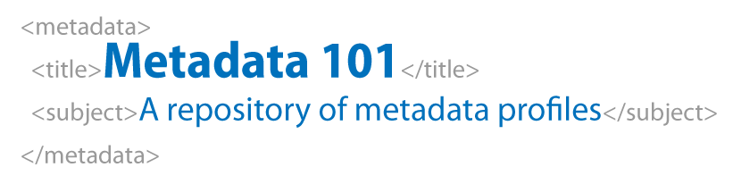

Achieving Metadata Nirvana
With GeoNetwork and Gemini 2.3
Presented by Jo Cook, Astun Technology, with Eoghan Hennessy and Vickie White
Meet the team
Eoghan Hennessy
Project Manager with responsibility for iShare in the Cloud and Metadata Enterprise Solutions
Vickie White
Sales Manager with responsibility for Central Government and Enterprise Solutions
Jo Cook
Lead Metadata Consultant
Question: What is nirvana, from a metadata perspective?
Answer: The ability to create metadata that has real business use, quickly and easily
In this webinar we'll look at the GeoNetwork metadata catalog and the new Gemini 2.3 metadata standard, to see how they might be harnessed to achieve all of this
What we're covering:
- A quick overview of GeoNetwork
- An overview of Gemini 2.3 metadata standard
- Additional features in the Gemini 2.3 plugin for GeoNetwork
- Non-spatial Metadata in GeoNetwork
GeoNetwork Overview
GeoNetwork is the leading open source, standards-compliant metadata catalog, used globally for national and international spatial data infrastructures. It is run by a Project Steering Committee, comprising lead developers and users from around the world.

It's also an Open Source Geospatial Foundation project, which means it has passed a stringent incubation process focusing on code quality and sustainability. This in turn means it is reliable, has regular releases, and a strong support network.
GeoNetwork can be used for the creation and storage of both spatial and non-spatial metadata, and endpoints for sharing metadata in both human and machine-readable formats. It has a powerful interface for discovering and viewing metadata and data resources, and the creation, editing, and publication of metadata records.
Gemini 2.3 overview
Gemini 2.3 is the metadata standard for spatial metadata in the UK. It is compliant with international standards such as ISO19115 and INSPIRE. By using this standard for your metadata, you ensure the widest compatability for your metadata, and benefit from UK-specific guidance and support from the AGI Gemini Working Group.
Changes in Gemini 2.3
- New elements (some optional, some mandatory)
- Some elements changing from optional to mandatory
- Changes to the encoding for some elements
- Renaming some elements
- Guidance changes throughout
The Gemini 2.3 plugin incorporates the technical standard, validation rules, and guidance into GeoNetwork, along with a customised editing interface, and some helper functions to make metadata creation easier. It was built by Astun with support from the core GeoNetwork development team, and is publicly available on GitHub.
Enhancements in the Gemini 2.3 plugin
- Better labelling and in-built guidance
- "Suggestions" for quality as well as validity
- "Inflate-Metadata" to ensure you don't miss or accidentally delete elements
- New templates for datasets, series and services
- Code snippets for contact details and conformity reports
Non-spatial metadata
Gemini 2.3 is for spatial metadata, but you can store non-spatial metadata in GeoNetwork too. Working with DEFRA/EA, we've created a stripped down template to minimise the amount of data entry required, and configured an endpoint for publishing non-spatial metadata to data.gov.uk, so you can store all of your metadata in one location.
Putting it all into practice
We provide metadata solutions and support to Scottish Government, DEFRA/EA and numerous local authorities, from INSPIRE compliance and publication to data.gov.uk, through to enterprise-level discoverability and interoperability.
Recapping the business benefits:
- Our solution enables better decision making through use of appropriate data,
- Reduces litigation resulting from data errors or user assumptions,
- Supports collaboration by simplifying access to data when needed,
- Ensures data transparency and breaks down silos.
The Astun hosted solution offers the following additional benefits:
- Cloud-based, with no local implementation,
- Secure, resilient and scalable, with performance monitoring,
- Integration with GIS platforms such as QGIS, ArcGIS, MapInfo, and of course iShare,
- Dashboard statistics and monitoring of linked services (WxS),
- Version control, auditing and roll-back
- Automated updates and/or reminders.
Any questions?
or contact sales@astuntechnology.com for more details

Achieving Metadata Nirvana with GeoNetwork and Gemini 2.3